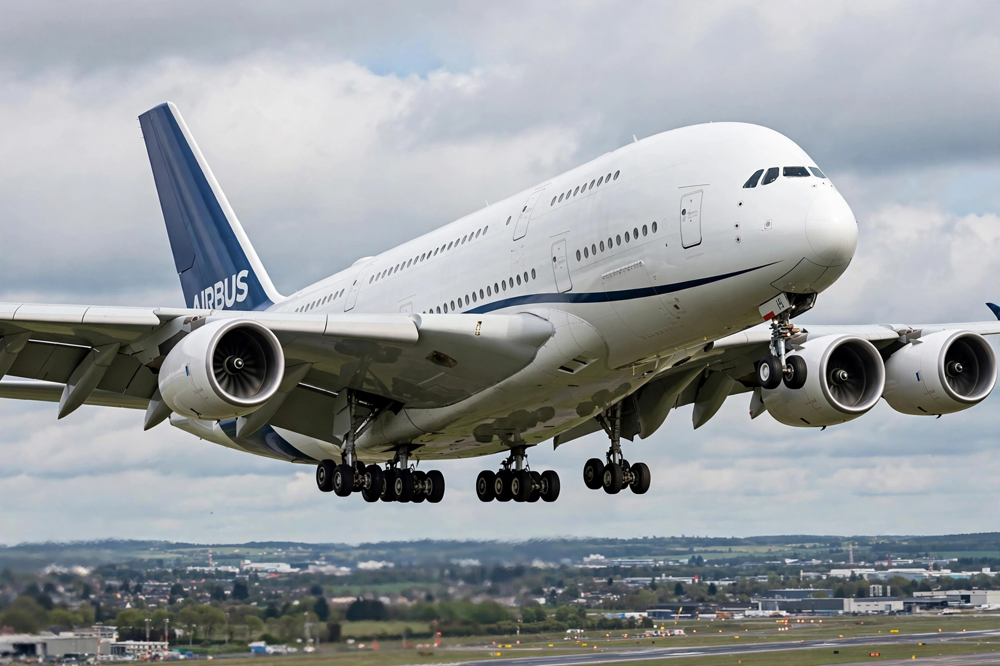

Airbus
From Wikipedia, the free encyclopedia

Airbus SE is a European aerospace corporation, the world's largest manufacturer of commercial airliners (since 2019, ahead of Boeing) and a major producer of helicopters, military aircraft and space systems. Founded as a consortium of French, German, British and Spanish manufacturers in 1970 to challenge American dominance, its A320 family pioneered digital fly-by-wire in airliners, and its A380 was the largest passenger aircraft ever built. Headquarters are in Leiden (Netherlands) with main offices in Toulouse, France.
History
The consortium launched with the A300 (1972), the first twin-aisle twinjet. The A320 (1988) brought fly-by-wire and side-stick controls to the mainstream, and its stretched/shrunk family (A318–A321, later the neo with new engines) became one of history's best-selling aircraft lines. The long-range A330/A340, the composite A350 (2015) and the double-deck A380 (2007; production ended 2021 for lack of orders) completed the range; Airbus also absorbed Bombardier's CSeries as the A220 (2018).
Structure and competition
Airbus consolidated as an integrated company in 2001/2017, with final assembly in Toulouse, Hamburg, Mobile (Alabama), Tianjin and Montreal. Its rivalry with Boeing — the 'duopoly' — has included a 17-year WTO dispute over subsidies, settled by truce in 2021. Military products include the Eurofighter Typhoon (consortium), the A400M transport and MRTT tankers; the space division builds Ariane 6 components and satellites.
Recent position
Airbus delivers 700–800 airliners in peak years with a backlog exceeding 8,000 aircraft, and studies hydrogen-powered concepts (ZEROe) for the 2030s while ramping A321neo and A350 production against supply-chain constraints.